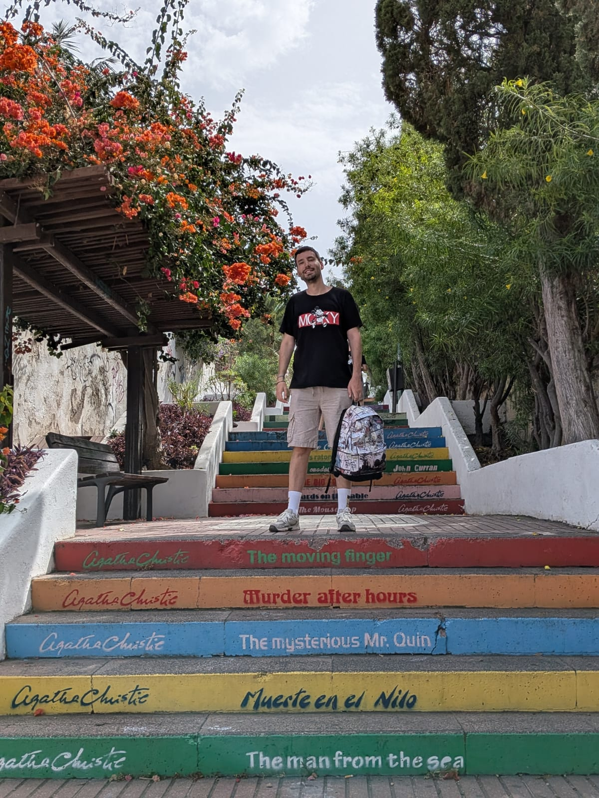

Libro publicado
Samuel entre mundos
Fantasía · Romantasy · Ficción especulativa
Escribo historias donde la magia no salva gratis: exige una decisión, una pérdida o una verdad incómoda.
Autor de Samuel entre mundos.
Libro publicado
Samuel entre mundos
Próximo evento
10 de junio · Feria del Libro
Premio literario
Primer Premio · Letras Como Espada
Sobre mí
David Porto Díaz nació en Pontevedra y reside en Madrid. Procedente del ámbito tecnológico, trabaja como profesional de IT especializado en QA y cuenta con formación en marketing online. Esa mezcla —estructura, análisis y sensibilidad hacia el lector— atraviesa también su forma de escribir.
Debutó con Samuel entre mundos, una novela de fantasía que combina aventura, identidad y crecimiento personal. Le interesan las historias que avanzan, proponen preguntas y respetan la inteligencia del lector.
Cuando no escribe, viaja, busca buena comida y toma notas mentales de lugares que quizá acaben convertidos en escenarios.

Lectura, viaje y oficio
Viajar, leer y observar lugares reales alimenta la parte menos visible de la escritura: el detalle concreto.
Libros
Libros Indie · Casa del Libro
La medalla de Samuel Osborne no brilla: late. En Noveris, su vida está hecha de normas, silencios y puertas cerradas. Cuando el sello se resquebraja, la ciudad empieza a fallar y una certeza emerge: la barrera está cediendo. El Espejo Ancestral guarda la respuesta. Las silenciadoras, también. Grimlor espera al otro lado. Y la pregunta no es si cruzar: es qué verdad merece el precio.
Para lectores de portales entre mundos, academias veladas, secretos familiares, magia con reglas y aventuras con amenaza creciente.
Otros proyectos
Antología colaborativa · Fantasía
Participación en antología colaborativa de fantasía. Un relato de superstición, memoria y objetos que no dejan marchar a quien los recoge.
Ver proyectoRelatos
Textos breves, premios literarios y piezas publicadas o seleccionadas en certámenes de ámbito nacional.
En proceso de publicación · Monza Ediciones
Nueva novela en proceso de publicación con editorial Monza Ediciones. Próximamente más información.
En desarrollo
Ficción especulativa de cuerpo, poder y domesticación. Proyecto en desarrollo.
Agenda
Bar Aleatorio · Madrid. Presentación oficial del debut literario con lectores y firma de ejemplares.
La Vecinal · Madrid. Segundo encuentro de presentación con firma y coloquio.
Firma y encuentro con lectores. [[pendiente: ciudad, caseta y horario]]
Presentaciones, clubes de lectura, charlas y firmas.
Premios y reconocimientos
XII Certamen Literario de Microrrelatos «De amor»
Letras Como Espada · Fallo comunicado por la organización.
Ver basesPremio Nacional de Literatura Infantil Juan Andrés Teno · babidibulibros
Seleccionado entre los diez finalistas del certamen nacional.
Ver publicaciónLa memoria de las tierras del norte · Diversidad Literaria
Proyecto colaborativo de fantasía seleccionado mediante crowdfunding editorial.
Ver proyectoPrensa
David Porto Díaz es escritor gallego de fantasía, romantasy y ficción especulativa. Autor de Samuel entre mundos (Libros Indie, 2025).
Nació en Pontevedra y reside en Madrid. Trabaja en tecnología como especialista en QA con formación en marketing online. Debutó con Samuel entre mundos, novela de fantasía de más de 400 páginas publicada por Libros Indie. Primer Premio en el XII Certamen de Microrrelatos de Letras Como Espada y finalista en certámenes nacionales.
Imagen disponible para medios, reseñas y presentaciones. Contacta directamente para el archivo en alta resolución.
Samuel entre mundos · Libros Indie · ISBN 9791387659776 · Tapa blanda · Más de 400 páginas · Castellano.
Para entrevistas, notas de prensa o coordinación editorial, usa el formulario de contacto o escribe directamente.
Contacto
Para entrevistas, firmas, colaboraciones o consultas sobre derechos, puedes escribirme directamente.